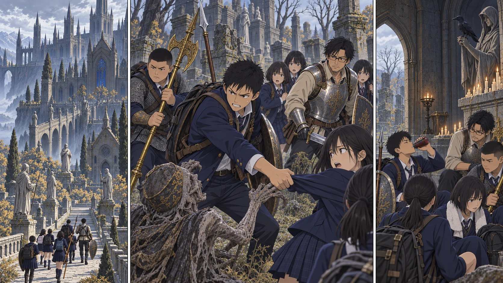

DAY48｜倒せる相手に、足を止められる。

【DAY48｜封印の向こう】輝石鍵を持つ先生が先に立ち、探索二隊が実際に門前へ揃う。青い封印が十三人の通路を開けた。この世界では、鍵を持つ者と一緒に到達した一隊を通すらしい。教会に残った二十人まで運ぶ光ではなかった。昇降機が動き出すと、湖が足元へ沈んでいく。尖塔と渡り廊下の向こうに、雲より暗い学院が現れた。
【探索A隊｜入口の射線】階段の上で、石の頭をした魔術師が杖を上げた。青い光が、雨の残る石段を走る。「柱まで、二人ずつ！」陽太が槍の穂先で位置を示す。盾で魔術を浴び続けるのではなく、柱へ入るまでの一瞬を守る。花は先生の背越しに射らず、横へ半歩ずれて、詠唱する腕を狙った。
魔術師二人と、奇妙に腕の多い人形兵二体。相手が倒れるたびに、次の者へ合図を渡す。直人が大剣を振り下ろした先で、人形の関節が崩れた。大地は黄金のハルバードを低く構え、脇へ抜ける敵を止める。入口の戦いは、誰も傷を負わずに終わった。修行した時間は、確かに身体へ残っている。
【カッコウの教会】高い天井から、音が遅れて返ってきた。ここにも教会がある。けれど、カーレの焚き火も、鍋の音もない。陸が祝福の位置を記録し、触れずに戻る。先生は人数を数えた。十三。前へ進むだけの力はある。次も同じように進めると思いかけた、その先が墓地だった。
【墓地｜健太の視点】動かないと思った腕が、草の下から伸びてきた。槍の届く距離より、ずっと近い。健太は一歩退こうとして、後ろに拓海がいることに気づいた。逃げ場を探した一瞬で、別の亡者が拓海の袖を掴む。犬の声までした。どの敵から倒すか。その順番が、急に分からなくなった。
健太は槍を横へ引き、袖を掴んだ手を引き剥がした。腕が墓石を擦ったが、痛みよりも、拓海の身体が戻ってきたことにほっとした。「後ろ、いる！ 射たないで！」花が弓を下げる。正しい判断だった。けれど、一射ぶんの間に、前の隊列へ別の手が届こうとしていた。
【二隊で戻す】先生がその間へ入り、盾を低く当てた。「大地、道を空けて。陽太、人数を！」ハルバードが道側の亡者を倒し、もう一体を前衛が押し止める。二体は倒した。だが足場も射線も整わない。今の並びで奥へ押すことを、先生はやめた。A隊が道を開き、B隊が最後の者を渡す。先生はしんがりから、一人ずつ戻る背を見届けた。
教会側まで離れ、追跡がないことを確かめる。健太は自分の赤い瓶を使い、擦った腕を動かした。動く。身体は治った。それでも「すみません」が先に出た。「足、止めました」。先生はすぐに否定しなかった。「そこで拓海を置いていかなかったのは、君の判断だ。次は、君一人で剥がさなくて済む並びにしよう」
拓海が、自分の袖を見たまま言った。「次、後ろ見る。撃つ場所ばっかり探してた」。蓮が地図に二列の点を描く。掴まれた者を助ける側と、助ける者を守る側。昨日までの矢印にはなかった役割が、一つ増えた。健太はもう一度腕を曲げてから、槍を受け取った。
【今日の線】水車へは行けなかった。学び舎の一室も、赤狼も、まだ先だ。日没まで押し込まず、交戦を切って教会へ戻る。学院正門前とカッコウの教会の祝福は未解放で記録した。新しい転送先を手に入れた日ではない。どこで隊列が崩れるかを、皆が自分の身体で知った日だった。
【留守の仕事】教会では二十人が、水と食事と交代の稽古を続けていた。鹿二頭で足りない九食分を買い足す。誠たちの石積みは一晩で城壁にはならないが、濡れた荷物を置く場所と、人が通る場所は昨日より分かれていた。探索隊が休めるのは、帰った先で仕事が終わっているからだった。
【判定記録｜各一回】天候4＋2＝6、曇り。学院入口4＋4＋補正3＝11、突破。墓地1＋1＋補正3＝5、事前条件どおり撤退。水車判定は未到達のため振っていない。基地6＋3＋補正3＝12。健太は赤瓶1で身体回復、新死亡0。赤月まで二日。
保存されたダイス
| 判定 | 出目 | 補正 | 合計 |
|---|
| 天候 | 4 + 2 | 0 | 6 |
| 学院入口 | 4 + 4 | 3 | 11 |
| 墓地 | 1 + 1 | 3 | 5 |
| 基地調達 | 6 + 3 | 3 | 12 |
事前条件 / 出目記録 / 原作参照・卓ルール